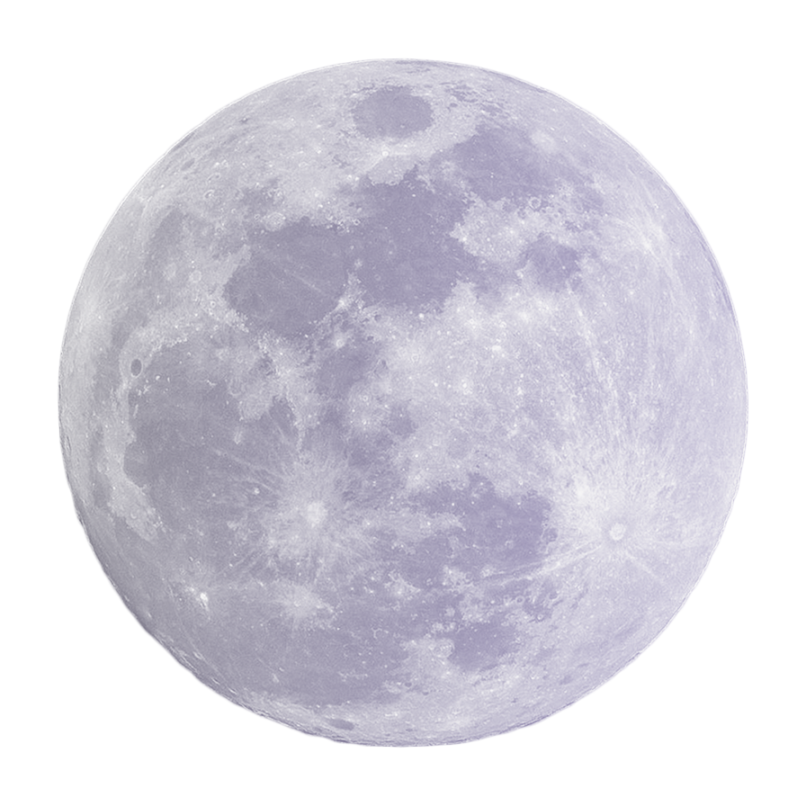

“moon”
The only place mankind has ventured beyond Earth is on the Moon. The Moon, the largest and brightest object in our night sky, stabilizes the Earth's axial wobble, which results in a generally constant climate. This makes Earth a more livable planet. Additionally, it brings about tides, which produce a rhythm that has aided people for countless years. A body the size of Mars likely collided with Earth and created the moon. Of the more than 200 moons that orbit planets in our solar system, the Moon on Earth is the sixth largest. Because no one knew there were any other moons until Galileo Galilei found four moons orbiting Jupiter, Earth's lone natural satellite is simply referred to as "the Moon."